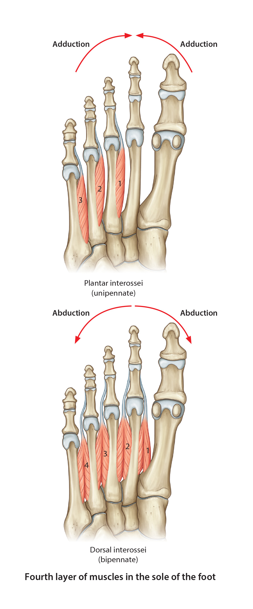

Lab 7 - Module 4 - The Foot: Page 3 of 8
×

Fourth layer of the sole of the foot:
|  |
| Tap on image to enlarge |
| Add the Plantar Interossei muscles. (adductors of the toes) |
|
Origin - Bases and medial sides of the 3, 4, 5 metatarsal bones Insertion - Medial bases of the proximal phalanges of the 3,4,5 toes, onto the dorsal digital expansion Innervation - Lateral plantar (S2,S3) Action - Adducts the 3, 4, 5 toes, flexes the MTP joints and extends the IP joints |
| Add the Dorsal Interossei muscles. (abductors of the toes) |
|
Origin - Each from two heads from the adjacent sides of the metatarsal bones Insertion - Proximal phalanx and dorsal digital expansion of the 2, 3, 4, toes Innervation - Lateral plantar (S2,S3) Action - Abducts the 2, 3, 4, toes, flexes MTP joints and extends IPjoints |